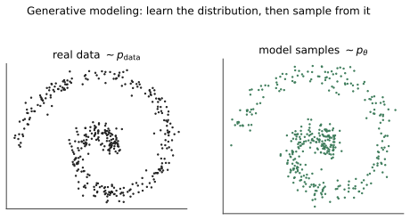
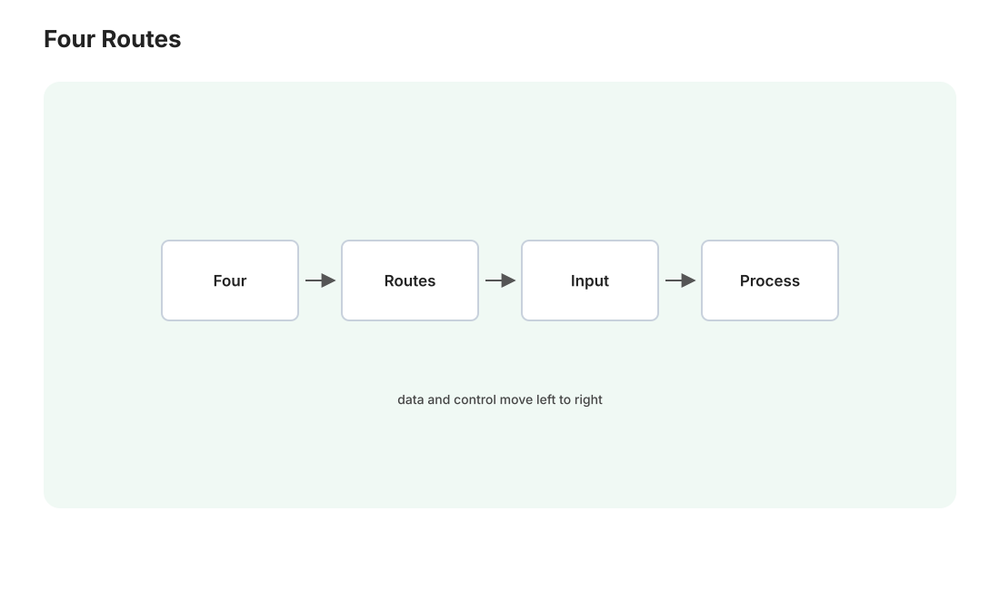

本讲目录
第 01 讲 · 生成模型：学分布与采样
问题设定：训练集是一堆图像。我们想要一个模型，能产出"看起来也属于这堆图像的世界"的新图像。用概率语言说：图像是高维空间里的点（一张 512×512 彩图是 \(x \in \mathbb{R}^{786432}\)），真实图像在这个空间里服从某个未知分布 \(p_{\text{data}}(x)\)——生成模型的任务就是学会从这个分布采样。本讲建立这个总框架，比较四条技术路线，并回答：为什么图像生成最终由扩散模型胜出。
1. 生成 = 学分布 + 会采样

判别式模型（分类器）学的是 \(p(y \mid x)\)：给图，判猫狗。生成式模型学的是 \(p(x)\) 本身——难度完全不是一个量级：判别只需在两类之间画一条边界，生成需要刻画"所有合理图像"在 78 万维空间中的分布形状。
两个立刻能感受到的困难：
① 维数灾难下的"针尖流形"。随机撒一个 78 万维的点，得到的是电视雪花——合理图像在这个空间里占的体积测度趋近于零。它们聚在一个低维流形附近（改变光照、视角、表情是在流形上滑动，随机扰动像素则立刻掉下流形）。学分布 = 找到这个流形并把概率质量铺上去。
② 会算概率 ≠ 会采样。就算给你一个能对任意 \(x\) 报出 \(p(x)\) 数值的黑盒，从中采样仍然是难题（高维空间里既不能网格枚举也不能拒绝采样）。所以每条生成路线的核心设计，都是给采样修一条可行的路：普遍套路是"从一个容易采样的分布（高斯噪声 \(z\)）出发，学一个变换把它运到数据分布上"。
各路线的差异，就在这个变换怎么参数化、怎么训练。
2. 四条路线的权衡

2.1 GAN：学一个"一步到位"的变换
生成器 \(G: z \mapsto x\) 一步把噪声变图；判别器 \(D\) 负责鉴别真伪，两者对抗训练（\(G\) 骗 \(D\)，\(D\) 抓 \(G\)）：
2014–2020 年图像生成的王者（StyleGAN 的人脸以假乱真）。优点：采样一步、极快。致命伤：训练不稳（min-max 博弈没有收敛保证，调参如走钢丝）与模式坍缩（\(G\) 发现几个能骗过 \(D\) 的样本就反复输出，放弃分布的多样性）。
2.2 VAE：学一个带概率的压缩-解压
编码器把 \(x\) 压成低维隐变量 \(z\) 的分布，解码器从 \(z\) 重建 \(x\)，优化证据下界（ELBO——第 02 讲会完整推导它，这里先见个面）：
训练稳定、理论优雅，但单用 VAE 生成的图偏糊（重建损失对"平均化"的偏好）。记住 VAE——它没有赢得生成主战场，却以另一个身份成为扩散模型的关键配角（第 04 讲：Stable Diffusion 的"潜空间"正是一个 VAE 的内部）。
2.3 自回归：把图像当句子逐"词"生成
把像素/图块排成序列，逐个预测下一个（GPT 的图像版；姊妹课程第 07 讲的思想直接搬过来）。似然可以精确计算、训练稳定，图文理解天然强（和语言共用一套框架，GPT 系内置生图走的就是这条融合路线）。缺点：高分辨率图有几万个 token，逐个生成慢；且"光栅顺序"对图像是别扭的（图像没有天然的从左到右）。
2.4 扩散：把"一步到位"拆成一千小步
扩散模型的洞察：直接学 \(z \to x\) 的巨变换太难，但学"把图像变得稍微干净一点"这个小变换很容易。于是：前向过程逐步给图像加噪直到变成纯高斯（这一半不用学，是固定的数学）；模型只学反向的每一小步去噪；生成时从纯噪声出发迭代去噪，图像逐渐"显影"。
| GAN | VAE | 自回归 | 扩散 | |
|---|---|---|---|---|
| 训练稳定性 | ✗ 对抗博弈 | ✓ | ✓ | ✓ 单一回归损失 |
| 样本质量 | ✓ 锐利 | 偏糊 | ✓ | ✓ 锐利 |
| 多样性/覆盖 | ✗ 模式坍缩 | ✓ | ✓ | ✓ |
| 采样速度 | ✓ 1 步 | ✓ 1 步 | ✗ 数万步 | ✗ 数十步（可优化，第 03 讲） |
| 似然可算 | ✗ | 下界 | ✓ 精确 | 下界 |
扩散几乎集齐了所有"✓"，唯一的代价是采样要几十步——而这恰好是工程可以攻坚的短板（第 03 讲的全部内容）。2020 年 DDPM 论文证明扩散能与 GAN 打平，2021 年《Diffusion Models Beat GANs》宣告易主，2022 年 Stable Diffusion 开源引爆全民生图。你 ComfyUI 里跑的一切——SD1.5、SDXL、FLUX——都是扩散家族（FLUX 用的流匹配是它的近亲推广，第 04 讲讲）。
3. 一个物理直觉：墨水扩散的倒放
扩散模型的名字来自非平衡热力学。一滴墨水滴进清水：分子热运动让墨水逐渐散开，最终均匀分布——这是熵增的、自发的、容易描述的过程（前向加噪的物理原型）。倒放这段录像——均匀的墨水自发聚回一滴——热力学上几乎不可能自发发生，但如果你知道每个时刻每个分子该往哪挪一小步，就能人工执行这个倒放。
扩散模型学的就是这个"往哪挪"：数学上叫分数（score），即对数概率密度的梯度 \(\nabla_x \log p(x)\)——它在每一点指向"概率密度升高最快的方向"，也就是"往数据流形上走"的方向。加噪的正过程把数据抹平成高斯；学到每个噪声水平下的 score，就能把高斯一步步"梳"回数据分布。第 02 讲将证明：训练网络预测噪声，恰好等价于学习 score——这就是"猜噪声"这个朴素目标背后的深层含义。
4. 文生图 = 条件生成
以上讲的都是无条件生成（随机出一张"合理的图"）。实用的文生图是条件生成：学 \(p(x \mid c)\)，\(c\) 是文字描述。框架不变，只是学到的变换多吃一个输入——去噪的每一小步都"看着文字描述去噪"（具体怎么"看"，是第 04 讲 cross-attention 的内容；怎么"看得更用力"，是第 03 讲 CFG 的内容）。
你在 ComfyUI 里的操作已经能对号入座了：
| ComfyUI 里的东西 | 本讲的数学对象 |
|---|---|
| Empty Latent Image（一张随机噪声） | \(z \sim \mathcal{N}(0, I)\)，采样的起点 |
| KSampler 跑的几十步 | 迭代去噪 = 学到的变换分步执行 |
| 正/负提示词 | 条件 \(c\)（负面提示的机制第 03 讲揭晓） |
| checkpoint 模型文件 | 参数化"往哪挪一小步"的神经网络（+配套件） |
本讲小结
| 概念 | 一句话 |
|---|---|
| 生成模型 | 学 \(p_{\text{data}}\) 并能从中采样；本质是学"噪声→数据"的变换 |
| 图像流形 | 合理图像是高维空间中的低维针尖，生成 = 找到流形 |
| 四路线 | GAN 快但不稳、VAE 稳但糊、自回归准但慢、扩散全能但多步 |
| 扩散直觉 | 墨水扩散的倒放；学的是 score = 指向数据流形的方向场 |
| 文生图 | 条件生成 \(p(x \mid c)\)：每一步去噪都看着文字 |
下一讲进入本课程数学的心脏：把"加噪-去噪"写成严格的概率模型，从极大似然出发，一路推导到那个惊人简洁的训练目标——\(\|\epsilon - \epsilon_\theta(x_t, t)\|^2\)，猜噪声。